1.简介
讲解和分享TCP协议的三次握手和四次挥手以及使用Wireshark抓取TCP/IP协议数据包的技能，能够深入分析TCP帧格式及“TCP三次握手”。通过抓包和分析数据包来理解TCP/IP协议，进一步加深对TCP包的理解和认识。
2.TCP连接的建立（三次握手）
2.1通俗易懂篇
首先来一个我们日常工作中比较常见的例子：远程会议、视频或者打电话。先上图:
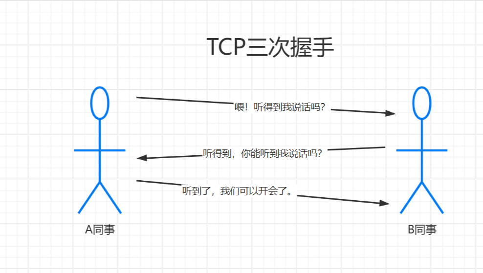
TCP的三次握手有点像我们远程有会议(疫情期间都遇到过吧)
1.A同事：喂！听得到我说话吗?(第一次握手A-->B)
2.B同事：听得到，你能听到我说话吗?(第二次握手B-->A)
3.A同事：听到了，我们可以开会了(第三次握手A-->B)
一次完整的远程会议流程。
2.2掉发烧脑篇
三次握手的过程，还是先上图:
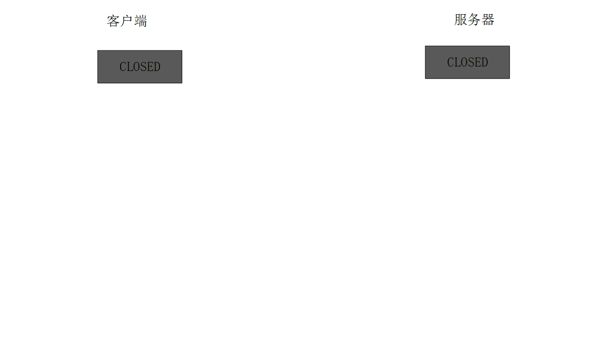
最开始的时候客户端和服务器都是处于CLOSED状态。主动打开连接的为客户端，被动打开连接的是服务器。
1.第一次握手：Client将标志位SYN置为1，随机产生一个值seq=J，并将该数据包发送给Server，Client进入SYN_SENT状态，等待Server确认。
2.第二次握手：Server收到数据包后由标志位SYN=1知道Client请求建立连接，Server将标志位SYN和ACK都置为1，ack (number )=J+1，随机产生一个值seq=K，并将该数据包发送给Client以确认连接请求，Server进入SYN_RCVD状态。
3.第三次握手：Client收到确认后，检查ack是否为J+1，ACK是否为1，如果正确则将标志位ACK置为1，ack=K+1，并将该数据包发送给Server，Server检查ack是否为K+1，ACK是否为1，如果正确则连接建立成功，Client和Server进入ESTABLISHED状态，完成三次握手，随后Client与Server之间可以开始传输数据了。
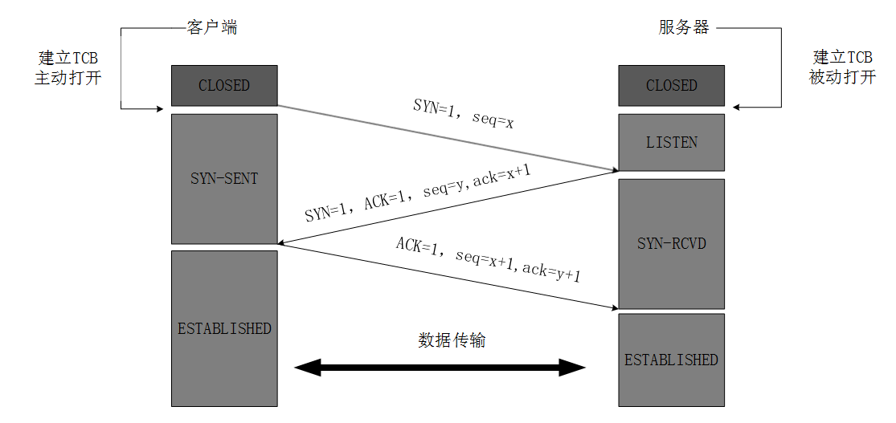
3.TCP连接的释放（四次挥手）
3.1通俗易懂篇
首先来一个我们日常工作中比较常见的例子:和渣男/女分手、离婚。先上图：
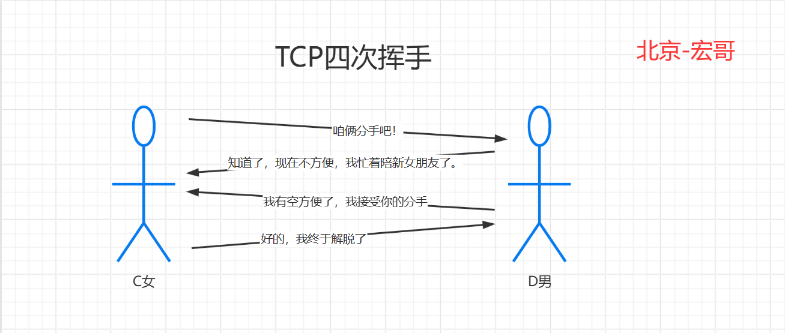
故事简述：C和D是男女朋友，C有一天发现D是渣男，想跟D分手。
1.C向D提出分手请求（第一次挥手）;
2.D收到请求后，虽然D是渣男，但是D还是很礼貌的，告诉C，我收到你的请求了；但是我现在忙着跟其他人谈恋爱昵（第二次挥手）;
3.D终于空下来了，告诉C，我接受你的分手请求了（第三次挥手）;
4.C收到D的回复后，告诉D我终于解脱（第四次挥手）;
3.2掉发烧脑篇
四次挥手的过程，还是先上图：
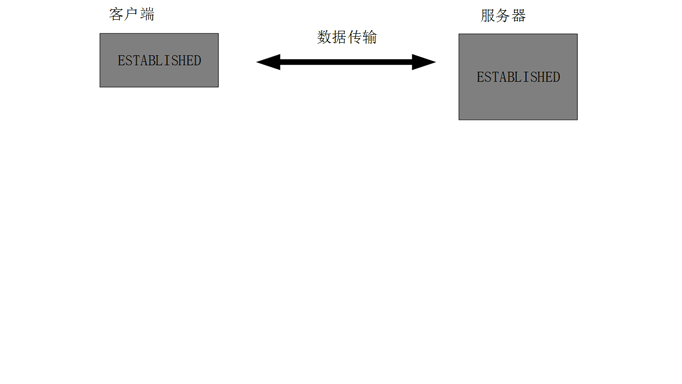
数据传输完毕后，双方都可释放连接。最开始的时候，客户端和服务器都是处于ESTABLISHED状态，然后客户端主动关闭，服务器被动关闭。
1.客户端进程发出连接释放报文，并且停止发送数据。释放数据报文首部，FIN=1，其序列号为seq=u（等于前面已经传送过来的数据的最后一个字节的序号加1），此时，客户端进入FIN-WAIT-1（终止等待1）状态。 TCP规定，FIN报文段即使不携带数据，也要消耗一个序号。
2.服务器收到连接释放报文，发出确认报文，ACK=1，ack=u+1，并且带上自己的序列号seq=v，此时，服务端就进入了CLOSE-WAIT（关闭等待）状态。TCP服务器通知高层的应用进程，客户端向服务器的方向就释放了，这时候处于半关闭状态，即客户端已经没有数据要发送了，但是服务器若发送数据，客户端依然要接受。这个状态还要持续一段时间，也就是整个CLOSE-WAIT状态持续的时间。
3.客户端收到服务器的确认请求后，此时，客户端就进入FIN-WAIT-2（终止等待2）状态，等待服务器发送连接释放报文（在这之前还需要接受服务器发送的最后的数据）。
4.服务器将最后的数据发送完毕后，就向客户端发送连接释放报文，FIN=1，ack=u+1，由于在半关闭状态，服务器很可能又发送了一些数据，假定此时的序列号为seq=w，此时，服务器就进入了LAST-ACK（最后确认）状态，等待客户端的确认。
5.客户端收到服务器的连接释放报文后，必须发出确认，ACK=1，ack=w+1，而自己的序列号是seq=u+1，此时，客户端就进入了TIME-WAIT（时间等待）状态。*注意此时TCP连接还没有释放，必须经过2∗ ∗MSL（最长报文段寿命）的时间后，当客户端撤销相应的TCB后，才进入CLOSED状态。
6.服务器只要收到了客户端发出的确认，立即进入CLOSED状态。同样，撤销TCB后，就结束了这次的TCP连接。可以看到，服务器结束TCP连接的时间要比客户端早一些。
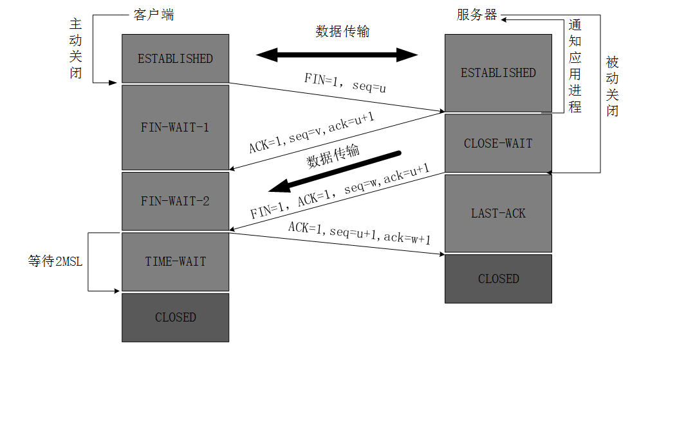
4.WireShark抓包实战
以度娘为例, 进行演示WireShark抓包实战
4.1获取度娘IP
1.首先我们来先看一下百度的IP是多少，想必都知道如何获取吧！方法很多，宏哥就要其中一种最简单的方法来看一下：通过ping命令即可：ping baidu.com，如下图所示：
2.从上图可以看出其中39.156.66.10就是度娘的IP地址，后面需要通过这个IP地址，作为wireshark的过滤条件，方便我们找到对应的报文。
4.2WireShark抓包
1.打开WireShark，并开启抓包模式开始捕获，如下图所示：
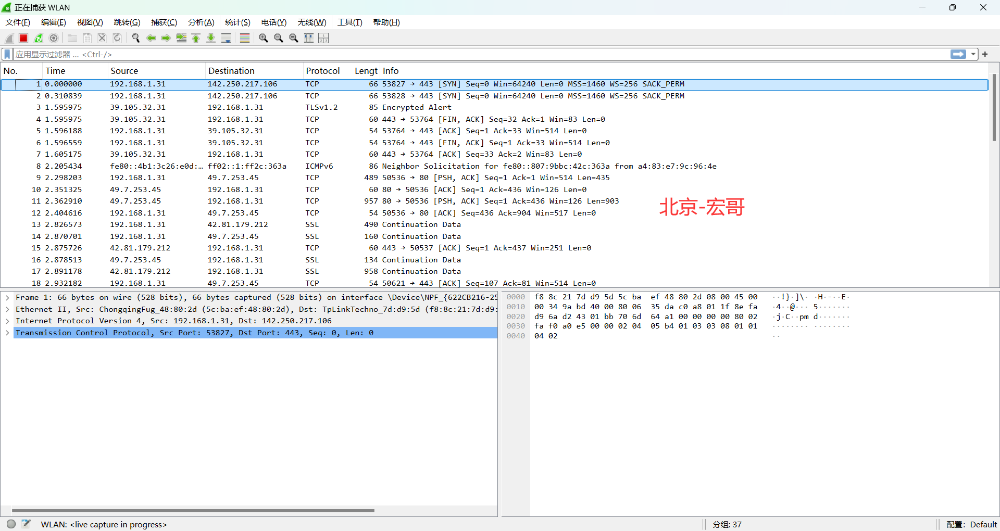
2.在命令行输入curl -I baidu.com来向百度发送一个HTTP请求。如下图所示:
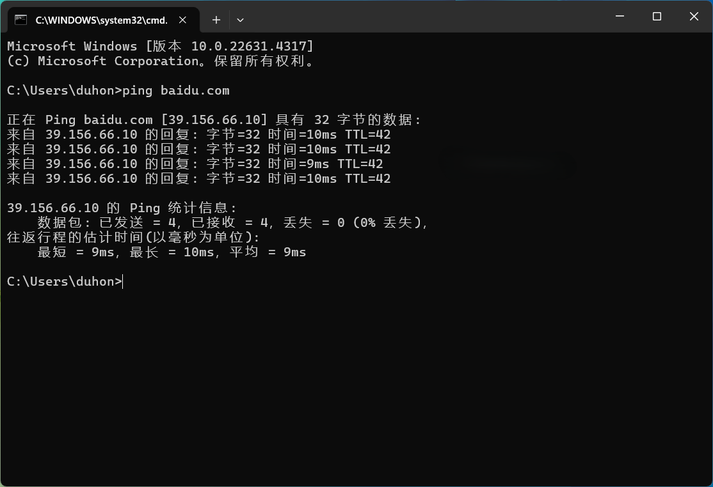
3.停止wireshark抓包。在wireshark的过滤器中，输入ip.addr == 39.156.66.10来过滤发送给百度的请求。可以得到如下过滤后的报文。如下图所示：
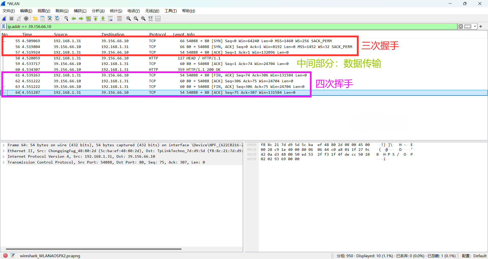
4.从上图我们可以清楚地看到前三条是TCP三次握手建立连接的报文，中间三个是包括一个HTTP请求，一个TCP的确认报文和一个HTTP响应报文，响应报文的TCP确认报文和第一次挥手被放在了同一个报文里。后面的四条是TCP四次挥手断开连接的报文。
4.3三次握手
4.3.1第一次握手
三次握手的第一个报文：SYN报文，也就是第一次握手，如下图所示：
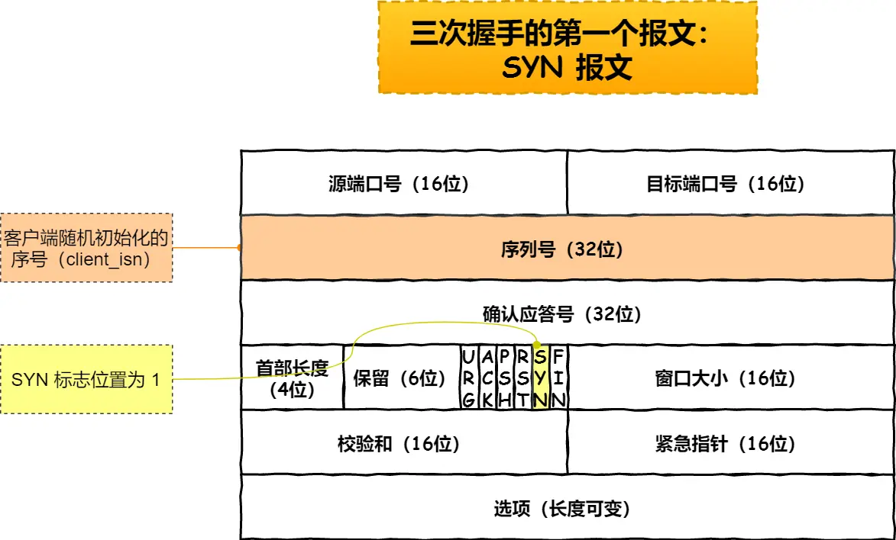
然后在WireShark中查看一下我们抓包抓到的是否正确，如下图所示：
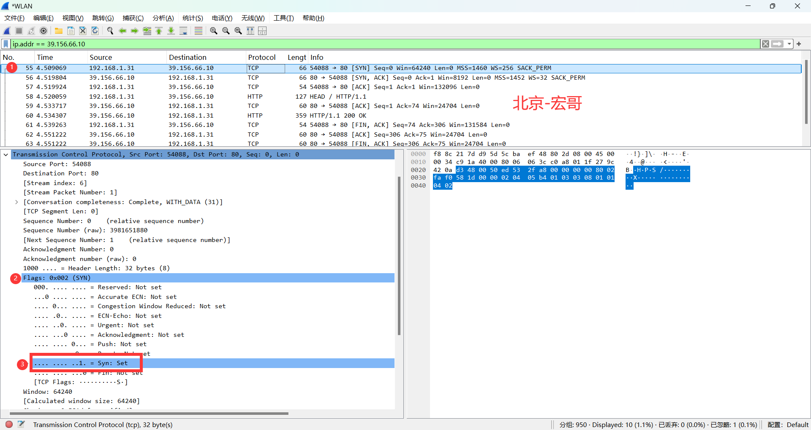
1.根据之前理论知识，我们趁热打铁：首先，来看第一个报文，即三次握手的第一次握手。点击选中第一个TCP即可查看。如下图所示：
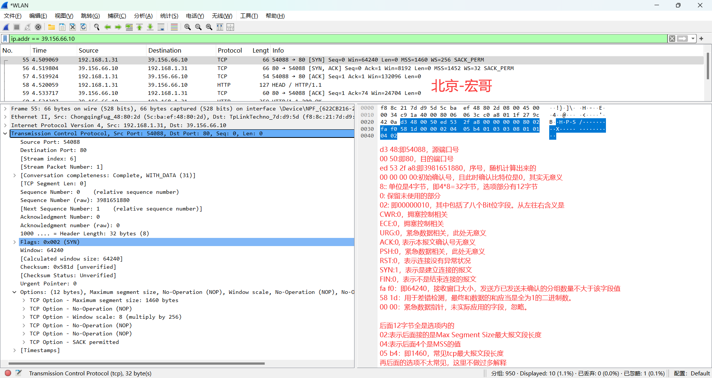
2.整个第一次握手的报文消息详细解析，都在上图中右边做了红色标注。我们来看比较重要的几个部分。
①开始是2字节的源端口号和2字节的目的端口号。
②紧接着的四个字节，表示的是客户端传送给服务端的初始序号，这是一个随机值，目的是维护安全。
③注意，再紧接着的四个字节是确认号，不过，在第一次握手的报文中，ACK标志bit位是0，所以，实际上在第一次握手时，确认号是无意义的，因为这时候也没有什么需要确认的。
④再后面的4个bit，表示的是TCP头部长度，也可以理解为数据偏移量。注意，这里是8，而该字段的单位是4字节，所以TCP头部是8*4 = 32字节；
⑤紧接着的是4个保留bit位，和8个特殊标志bit位。这些标志按顺序依次是CWR、ECE、URG、ACK、PSH、RST、SYN、FIN，关注ACK、SYN、FIN即可。这里SYN为1，表示是一个建立连接的报文，ACK为0，表示本报文的确认号无意义。
⑥后面2字节表示接收窗口大小，是用于流量控制的。
⑦再后面，是2字节的校验和，2字节的紧急数据指针。
⑧需要额外指出的是，此报文指出TCP头部有32个字节，而不是一般报文是20字节。这里是因为在选项部分，本报文携带了一些额外的数据，其中包括MSS(Maximum Segment Size): 1460 bytes 等信息。
4.3.2第二次握手
三次握手的第二个报文：SYN+ACK报文，也就是第二次握手，如下图所示：
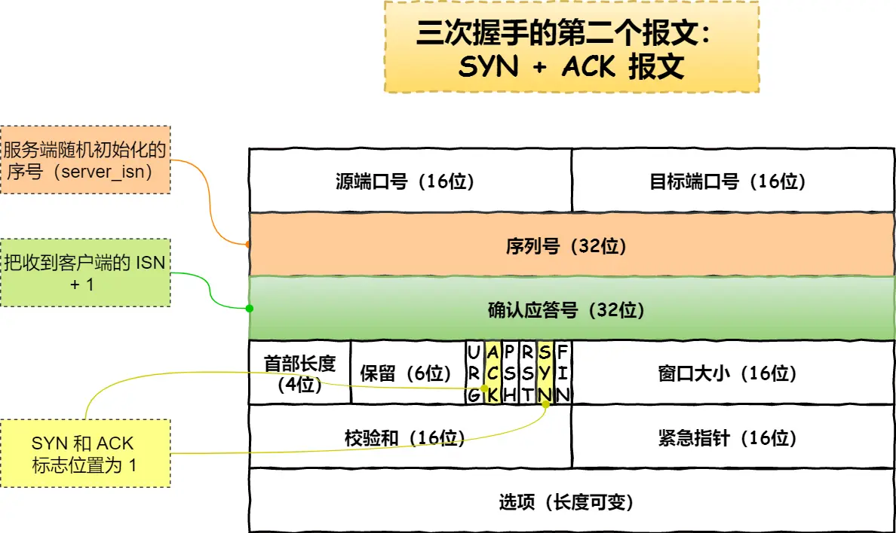
然后在WireShark中查看一下我们抓包抓到的是否正确，如下图所示：
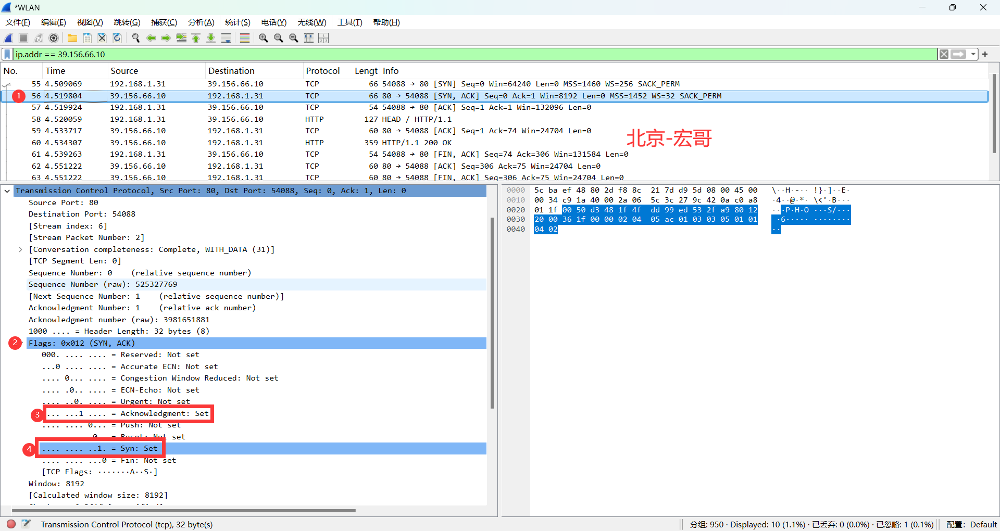
1.同样的方法：点击选中第二个TCP即可查看。如下图所示：
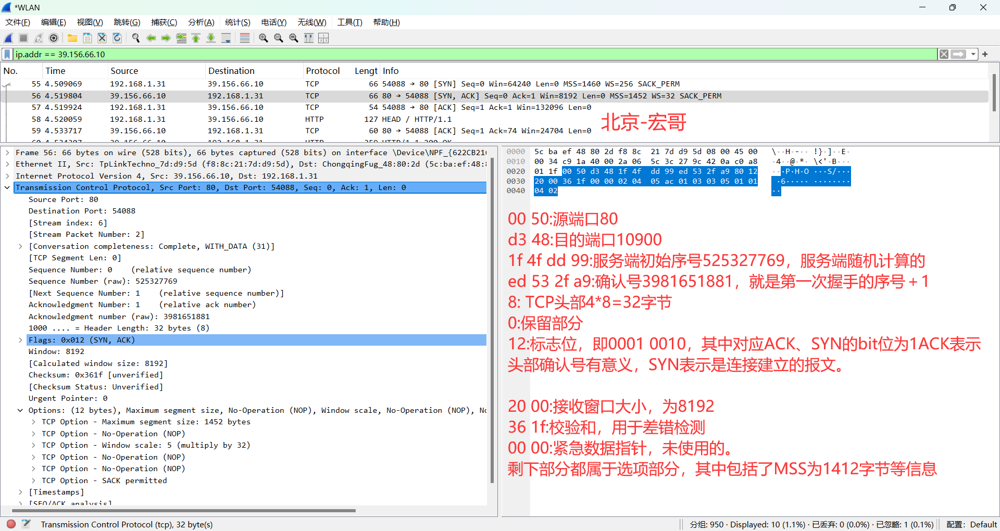
2.上图中右边红色部分标注了第二次握手的报文详细信息，其大部分都和第一次握手类似。来看比较重要的几个部分
①源端口号和目的端口号正好和第一次握手相反，说明这是服务端响应客户端的报文
②服务端给出了一个自己的初始序号A1 7C 07 91，对应2709260177。
③服务端的ACK bit位是1，说明该报文的确认号是有意义的，确认号对应的值是15 ec 6b df，恰好是第一次握手的报文的序号+1，表示在该数字之前的字节都已经收到，期望下一次收到的报文的序号是这个数
④这里TCP头部也有32字节，选项部分同样说明了自己的MSS等信息，这里的MSS给的值是1412字节。
总体上来说，第二次握手的报文和第一次握手的报文的区别在ACK bit位是1，并且确认号是第一次握手报文的序号+1，此外，两个报文都包括了额外的选项部分，并且头部都有32个字节。
5.小结
前边理论加后边的实践，想必小伙伴或者童鞋们对TCP包有了进一步的认识了吧，宏哥觉得说清楚了，如果有想了解更清楚地，可以查一些资料。好了，今天时间也不早了，就到这里！感谢您耐心的阅读~~
评论区